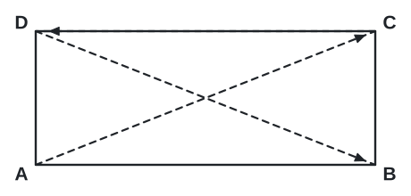

אמילי ותום יצאו זה לקראת זה בשעה 8:00, תום מנקודה A ואמילי מנקודה B, על מסלול ישר המחבר בין שתי הנקודות. בשעה 9:00, שעה לפני שנפגשו, היה המרחק ביניהם 150 ק"מ.
מה המרחק בין נקודה A לנקודה B (בק"מ)?
הצגת הפתרון
התשובה הסופית4תשובה (4)300
דרך הפתרון והסבר
תום ואמילי נעים זה לקראת זה, ולכן המרחק ביניהם קטן בקצב של סכום המהירויות.ב־9:00 המרחק היה 150 ק"מ, והם נפגשו שעה אחר כך (10:00):בשעה אחת נסגרו 150 ק"מ, ולכן מהירות ההתקרבות 150 קמ"ש.מ־8:00 ועד 10:00 עברו שעתיים, ובהן נסגר כל המרחק בין A ל־B:150 · 2 = 300 ק"מ
💡 הלקח תנועה זה לקראת זה – המרחק קטן בקצב סכום המהירויות.
⚠️ המלכודת המרחק ב־9:00 הוא רק חצי מהדרך – הם יצאו שעה קודם.
🔁 דפוס חוזרהספק וקצב עבודה
עבודה = מספר עובדים × זמן. קצב נטו = מה שנכנס פחות מה שיוצא.
תנועה
דרך = מהירות × זמן. זה לקראת זה – מחברים מהירויות; באותו כיוון – מחסירים.
בסרטוט שלפניכם מעגל שמרכזו O ורדיוסו 8 ס"מ, בו הועברו שני קטרים (AB ו־CD) המאונכים זה לזה. ארנב וצב יצאו מנקודה A, באותו הזמן, לריצה עד לנקודה B. מהירותו של הארנב היא 4 מטר לשנייה ומהירותו של הצב היא 2 מטר לשנייה. בשני הסרטוטים שלפניכם מוצגים מסלולי הריצה של הארנב והצב.
מה מהבאים נכון בהכרח?
הצגת הפתרון
התשובה הסופית1תשובה (1)הארנב הגיע ראשון לנקודה B
דרך הפתרון והסבר
רדיוס המעגל 8, ולכן הקוטר 16 ורבע מעגל 2π · 84 = 4π ≈ 12.6.המסלול של הארנב (לפי הסרטוט): קשת מ־A ל־D, הקוטר מ־D ל־C, וקשת מ־C ל־B.4π + 16 + 4π = 16 + 8π ≈ 41.1הזמן במהירות 4: 41.14 ≈ 10.3המסלול של הצב (לפי הסרטוט): קשת מ־A ל־D, ואז ישר מ־D למרכז O ומ־O ל־B.4π + 8 + 8 = 16 + 4π ≈ 28.6הזמן במהירות 2: 28.62 ≈ 14.310.3 < 14.3 – הארנב הגיע ראשון.
💡 הלקח כשמהירויות שונות – משווים זמנים (דרך/מהירות), לא מרחקים.
⚠️ המלכודת המסלול של הארנב ארוך יותר, אבל הוא מהיר פי 2 – משווים זמנים, לא מרחקים.
🔁 דפוס חוזרתנועה
דרך = מהירות × זמן. זה לקראת זה – מחברים מהירויות; באותו כיוון – מחסירים.
זוויות במעגל
זווית מרכזית = הקשת שעליה היא נשענת. זווית היקפית = חצי ממנה. 📐 נוסחאות
נבדקהפתרון תואם את מפתח התשובות של הספר.
בתמלול נכתב שהצב רץ לאורך הקוטר מ־A ל־B. לפי הסרטוט, הצב רץ בקשת מ־A ל־D ואז דרך O ל־B – וזה מה שנותן את תשובת המפתח.
בסרטוט שלפניכם מלבן ABCD. שני רוכבי אופניים יצאו לרכיבה מהנקודה A, באותה השעה ובאותה המהירות. רוכב א' רכב לאורך היקפו של המלבן בחזרה עד לנקודה A. רוכב ב' רכב לאורך המסלול המסומן בחיצים עד לנקודה B.
מה מהבאים נכון בהכרח?

הצגת הפתרון
התשובה הסופית4תשובה (4)אף אחת מהטענות אינה נכונה בהכרח
דרך הפתרון והסבר
נסמן את צלעות המלבן: AB = CD = a, AD = BC = b, והאלכסון d = √a² + b².רוכב א' – היקף המלבן:2a + 2bרוכב ב' – A → C (אלכסון), C → D (צלע), D → B (אלכסון):d + a + d = 2d + aמשווים 2d + a מול 2a + 2b, כלומר 2d מול a + 2b. התוצאה תלויה בממדים:ריבוע 1 על 1: 2d = 2√2 ≈ 2.83, ו־a + 2b = 3 – רוכב ב' מהיר יותר.מלבן a = 10, b = 1: 2d ≈ 20.1, ו־a + 2b = 12 – רוכב א' מהיר יותר.אי אפשר לקבוע: התשובה (4).
💡 הלקח לא מניחים ריבוע; משווים היקף ואלכסונים עם אי־שוויון המשולש.
⚠️ המלכודת לא להניח שהמלבן ריבוע – הממדים משנים את התשובה.
🔁 דפוס חוזראי־שוויון המשולש
כל צלע במשולש קטנה מסכום שתי האחרות וגדולה מההפרש ביניהן. 📐 נוסחאות
תנועה
דרך = מהירות × זמן. זה לקראת זה – מחברים מהירויות; באותו כיוון – מחסירים.
יהלי ועומר יצאו מאותה הנקודה ונסעו לשני כיוונים שונים. שניהם החלו את נסיעתם באותו הזמן ונסעו כל אחד במהירות קבועה משלו. מהירותו של יהלי גדולה פי 3 ממהירותו של עומר. כעבור שעתיים המרחק ביניהם היה 40 ק"מ.
איזו מהמהירויות הבאות יכולה להיות מהירותו של עומר (בקמ"ש)?
הצגת הפתרון
התשובה הסופית1תשובה (1)8
דרך הפתרון והסבר
נסמן את מהירות עומר v. מהירות יהלי 3v.אחרי שעתיים:עומר עבר 2v, ויהלי עבר 6v.נקודת המוצא ושני המיקומים יוצרים משולש (הכיוונים שונים), וצלעו השלישית 40.אי־שוויון המשולש: כל צלע קטנה מסכום שתי האחרות וגדולה מההפרש ביניהן:6v − 2v < 40 < 6v + 2v4v < 40 ⇒ v < 108v > 40 ⇒ v > 5לכן 5 < v < 10. מבין התשובות: 8.
💡 הלקח "כיוונים שונים" – משולש: אי־שוויון המשולש קובע את טווח המרחק.
⚠️ המלכודתv = 10 יתאים רק אם נסעו באותו כיוון בדיוק (משולש "שטוח") – אבל נתון שהכיוונים שונים.
🔁 דפוס חוזראי־שוויון המשולש
כל צלע במשולש קטנה מסכום שתי האחרות וגדולה מההפרש ביניהן. 📐 נוסחאות
מקרה קיצוני
למקסימום או מינימום – בונים את המקרה הקיצוני ובודקים שכל התנאים מתקיימים.
השעון של ניר מאחר: בכל 5 דקות שחולפות הוא מתקדם 4 דקות. בשעה 12:00 כיוון ניר את שעונו לשעה הנכונה. כעבור כמה זמן (בשעות) יראה השעון שוב בשעה שלמה?
הצגת הפתרון
התשובה הסופית2תשובה (2)5
דרך הפתרון והסבר
בכל 5 דקות אמיתיות השעון מתקדם 4 דקות, כלומר הוא מראה 45 = 0.8 מהזמן שחלף.נחפש מתי גם השעה האמיתית וגם השעון מראים שעה עגולה:אחרי t שעות אמיתיות (t שלם), השעון התקדם 0.8t שעות – וזה צריך להיות שלם.0.8t = 4t5 שלם רק כש־t מתחלק ב־5.הפעם הראשונה: t = 5.השעה האמיתית 17:00, והשעון מראה 16:00 – שתיהן שעות עגולות.
💡 הלקח שעון איטי (0.8 מהזמן): שתי השעות עגולות כש־t ו־0.8t שלמים ⇐ t = 5.
⚠️ המלכודת צריך שעה עגולה בשני השעונים בו זמנית – לכן t ו־0.8t שניהם שלמים.
🔁 דפוס חוזרהכלה והפרדה
א או ב = א + ב − (א וגם ב).
הצבה של ביטוי חוזר
ביטוי שחוזר – מסמנים אותו באות אחת ופותרים משוואה פשוטה יותר.
נבדקהפתרון תואם את מפתח התשובות של הספר.
הנוסח אומת מול הספר. "שעה שלמה" – כשגם השעה האמיתית וגם השעון מראים שעה עגולה.
בסנדלריה עובדים 24 סנדלרים. בעל הסנדלרייה רכש מכונה שהספקה שווה להספק של 4 סנדלרים, וכדי להפעיל אותה דרוש סנדלר אחד.
אם מספר הסנדלרים הכולל לא השתנה, פי כמה גדל ההספק של הסנדלרייה?
הצגת הפתרון
התשובה הסופית3תשובה (3)98
דרך הפתרון והסבר
נמדוד הספק ביחידות של "סנדלר".לפני: 24 סנדלרים עובדים.הספק: 24.אחרי: אחד הסנדלרים מפעיל את המכונה ולא תופר בעצמו.23 סנדלרים + מכונה בהספק 4 = 27.היחס:2724 = 98
💡 הלקח מודדים הספק ביחידות "סנדלר"; מי שמפעיל את המכונה לא תופר.
⚠️ המלכודת הסנדלר שמפעיל את המכונה לא תופר – לכן 23 ולא 24.
🔁 דפוס חוזרהספק וקצב עבודה
עבודה = מספר עובדים × זמן. קצב נטו = מה שנכנס פחות מה שיוצא.
המרת יחידות ומה שואלים
ממירים יחידות לפני החישוב, ובודקים באיזו יחידה מבקשים את התשובה.
נמלה וארנב יוצאים לריצה, מאותה הנקודה ולאותו הכיוון, במסלול מעגלי שאורכו 120 מטרים. מהירותו של הארנב היא 8 מטרים לשנייה ומהירותה של הנמלה היא 2 מטרים לשנייה.
כעבור כמה זמן (בשניות) יחלוף הארנב על פני הנמלה בפעם השלישית?
הצגת הפתרון
התשובה הסופית3תשובה (3)60
דרך הפתרון והסבר
שניהם רצים באותו כיוון. הארנב מתרחק מהנמלה במהירות יחסית:8 − 2 = 6 מטר לשנייה.הארנב חולף על פני הנמלה בכל פעם שהוא מקדים אותה בהקפה שלמה – 120 מטר.זמן לכל עקיפה: 1206 = 20 שניות.העקיפה השלישית:3 · 20 = 60 שניותבדיקה: אחרי 60 שניות הארנב רץ 480 מטר (4 הקפות) והנמלה 120 מטר (הקפה אחת) – הפרש של 3 הקפות ✓
💡 הלקח באותו כיוון: מהירות יחסית = הפרש המהירויות. עקיפה = יתרון של הקפה אחת.
⚠️ המלכודת עקיפה פירושה שהארנב השלים הקפה אחת יותר מהנמלה.
🔁 דפוס חוזרתנועה
דרך = מהירות × זמן. זה לקראת זה – מחברים מהירויות; באותו כיוון – מחסירים.
צוות של 5 גננים, בעלי הספק זהה, מכסים דשא שמכסה כיכר מעגלית שרדיוסה 5 מטר בשעה וחצי. כמה זמן (בשעות) דרוש לצוות הגננים לכסות דשא של אצטדיון מלבני שאורכו 100 מטר ורוחבו 60 מטר?
הצגת הפתרון
התשובה הסופית1תשובה (1)360π
דרך הפתרון והסבר
אותו צוות עובד באותו קצב, ולכן הזמן פרופורציוני לשטח. מספר הגננים (5) לא משנה דבר.שטח הכיכר, שמכוסה ב־1.5 שעות:π · 5² = 25πשטח האצטדיון:100 · 60 = 6000האצטדיון גדול מהכיכר פי 600025π, ולכן גם הזמן:1.5 · 600025π =900025π =360πהתשובה: 360π שעות.
💡 הלקח זמן פרופורציוני לשטח (אותו צוות). שטח עיגול πr².
⚠️ המלכודת שטח עיגול הוא πr² – הרדיוס בריבוע.
🔁 דפוס חוזרהספק וקצב עבודה
עבודה = מספר עובדים × זמן. קצב נטו = מה שנכנס פחות מה שיוצא.
שני אוטובוסים נוסעים מתל אביב לירושלים הלוך ושוב החל מ־6:00 בבוקר ועד 21:00 ללא הפסקה. האוטובוס הראשון נוסע במהירות של 60 קמ"ש והאוטובוס השני נוסע במהירות 90 קמ"ש. אם המרחק בין תל אביב לירושלים הוא 90 ק"מ, כמה פעמים במהלך היום נפגשו האוטובוסים בתחנת המוצא בתל אביב?
הצגת הפתרון
התשובה הסופית2תשובה (2)2
דרך הפתרון והסבר
נחשב לכל אוטובוס כמה זמן לוקח סיבוב הלוך־חזור (180 ק"מ):אוטובוס 1 (60 קמ"ש): 18060 = 3 שעות.אוטובוס 2 (90 קמ"ש): 18090 = 2 שעות.השעות שבהן כל אחד נמצא בתל אביב (אחרי היציאה ב־6:00):אוטובוס 1: 9:00, 12:00, 15:00, 18:00, 21:00אוטובוס 2: 8:00, 10:00, 12:00, 14:00, 16:00, 18:00, 20:00השעות המשותפות: 12:00 ו־18:00 – פעמיים.(כל 6 שעות – הכפולה המשותפת של 3 ו־2. ב־21:00 אוטובוס 2 לא בתל אביב.)
💡 הלקח סיבוב הלוך־חזור = פי 2 מכיוון אחד; מפגשים בנקודת המוצא בכפולה משותפת של זמני הסיבוב.
⚠️ המלכודת הלוך־חזור לוקח פי 2 מנסיעה בכיוון אחד.
🔁 דפוס חוזרכפולה משותפת קטנה
מתחלק ב־a וגם ב־b ⇔ מתחלק ב־LCM שלהם. אירועים חוזרים נפגשים שוב אחרי LCM.
תנועה
דרך = מהירות × זמן. זה לקראת זה – מחברים מהירויות; באותו כיוון – מחסירים.
יובל יצא לריצת הר ועמק שאורכה 12 שעות. אחת ל־12 דקות הוא לוגם מבקבוק המים שלו, אחת לרבע שעה הוא חולף על פני רץ אחר ואחת ל־45 דקות הוא עובר בתחנת רענון.
כמה פעמים במהלך הריצה חלף יובל על פני רץ אחר בתחנת רענון תוך כדי לגימה מבקבוקו?
הצגת הפתרון
התשובה הסופית4תשובה (4)4
דרך הפתרון והסבר
שלושת האירועים קורים יחד רק בזמנים שהם כפולה משותפת של 12, 15 ו־45 דקות.הכפולה המשותפת הקטנה:12 = 2² · 3, 15 = 3 · 5, 45 = 3² · 5LCM = 2² · 3² · 5 = 180 דקות = 3 שעותב־12 שעות:אחרי 3, 6, 9 ו־12 שעות – 4 פעמים.
💡 הלקח אירועים חוזרים קורים יחד בכפולה המשותפת הקטנה (LCM).
⚠️ המלכודת לחפש כפולה משותפת קטנה (LCM), לא מחלק משותף.
🔁 דפוס חוזרכפולה משותפת קטנה
מתחלק ב־a וגם ב־b ⇔ מתחלק ב־LCM שלהם. אירועים חוזרים נפגשים שוב אחרי LCM.
מדפסת מדפיסה 6 עמודים בחצי שעה. אחת לשעתיים כורך מאגד 30 עמודים לחוברת אחת. בהנחה ו־3 מדפסות ו־2 כורכים החלו לעבוד ב־8:00 וכי יום העבודה מסתיים בשעה 20:00, כמה עמודים יוותרו ללא כריכה?
הצגת הפתרון
התשובה הסופית3תשובה (3)72
דרך הפתרון והסבר
יום העבודה 8:00 עד 20:00 – 12 שעות.הדפסה:מדפסת: 6 עמודים בחצי שעה = 12 עמודים בשעה.3 מדפסות ב־12 שעות: 3 · 12 · 12 = 432 עמודים.כריכה:כורך: 30 עמודים כל שעתיים – 6 פעמים ב־12 שעות: 180 עמודים.2 כורכים: 360 עמודים.לא נכרכו:432 − 360 = 72 עמודים.
💡 הלקח מחשבים כל שלב (הדפסה, כריכה) בנפרד לאותו פרק זמן – הצוואר הצר קובע.
⚠️ המלכודת לחשב את ההדפסה ואת הכריכה בנפרד, לאותו פרק זמן.
🔁 דפוס חוזרהספק וקצב עבודה
עבודה = מספר עובדים × זמן. קצב נטו = מה שנכנס פחות מה שיוצא.
לצוות חיילים העומדים לפני ניווט לילה רגלי יש מפה בקנה מידה של 1:100,000. מפקד הצוות סימן לחיילים מסלול שאורכו על המפה הוא 20 ס"מ.
אם החיילים עברו את המסלול ב־____ אזי מהירותם היא ____ קמ"ש.
הצגת הפתרון
התשובה הסופית4תשובה (4)רבע שעה ; 80 קמ"ש
דרך הפתרון והסבר
קנה מידה 1:100,000 – כל ס"מ במפה הוא 100,000 ס"מ = 1 ק"מ במציאות.20 ס"מ במפה = 20 ק"מ.נבדוק כל זוג:חצי שעה: 20 ÷ 0.5 = 40 קמ"ש (לא 20 ולא 10) ✗רבע שעה: 20 ÷ 0.25 = 80 קמ"ש ✓ (לא 40) – תשובה (4).
💡 הלקח קנה מידה 1:100,000 – 1 ס"מ = 1 ק"מ.
⚠️ המלכודת100,000 ס"מ הם 1 ק"מ – לא 100 מטר.
🔁 דפוס חוזרתנועה
דרך = מהירות × זמן. זה לקראת זה – מחברים מהירויות; באותו כיוון – מחסירים.